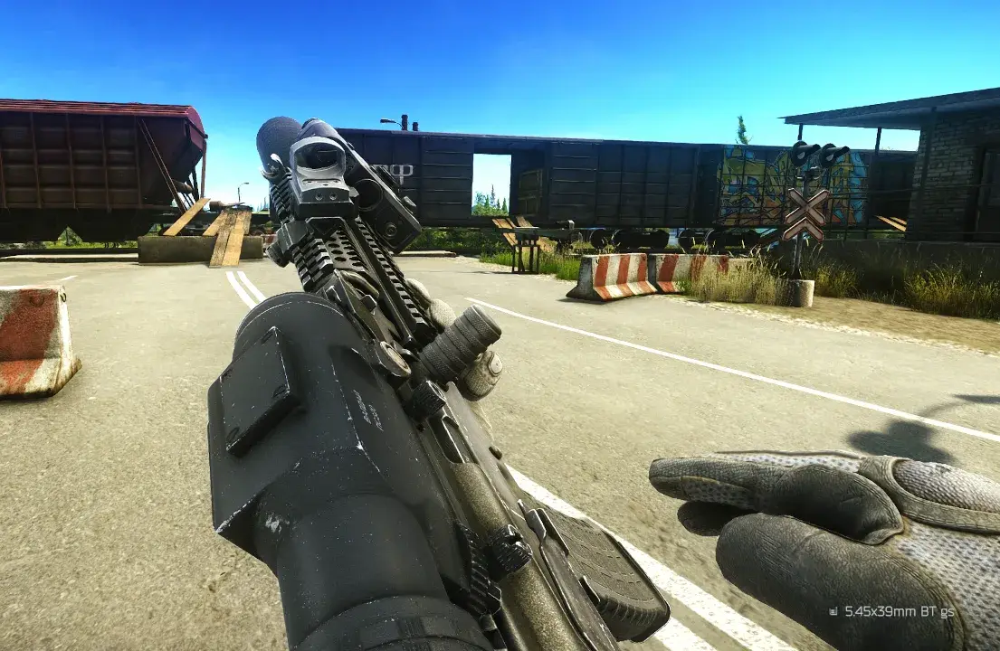
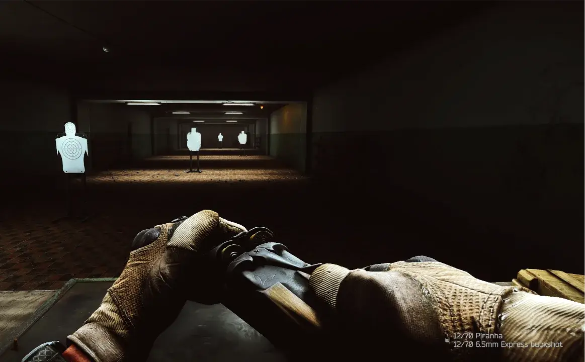

Mod
Chamber Ammo Info
- Downloads
- 4,342
- Favourites
- 17
- Mod lists
- 49
📜 Description
Chamber Ammo Info is a mod for Single Player Tarkov that shows the ammo type loaded in the chamber when performing a chamber check.
✨ Features
- Displays the ammo type when performing a chamber check
- Supports multi-chamber, no-chamber weapons and underbarrel grenade launchers
- Integrates seamlessly into Tarkov’s existing UI
📁 Installation
- Download the latest release
- Copy the
BepInExfolder into your SPT installation - Start the game
📷 Preview


📄 License
Distributed under the MIT License. See LICENSE for more information.